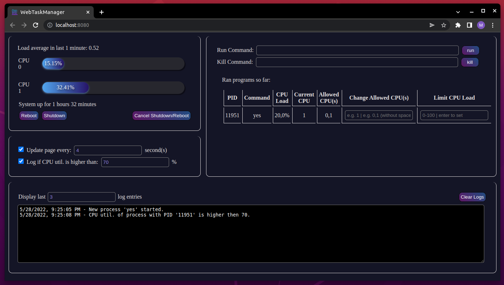
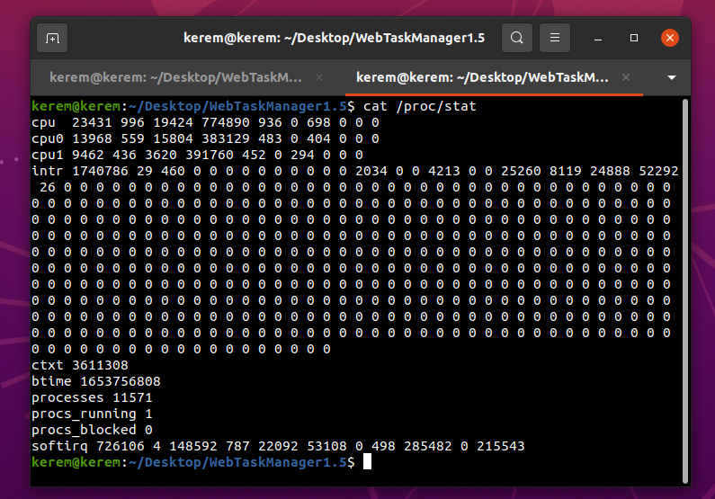
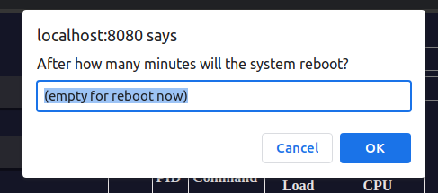
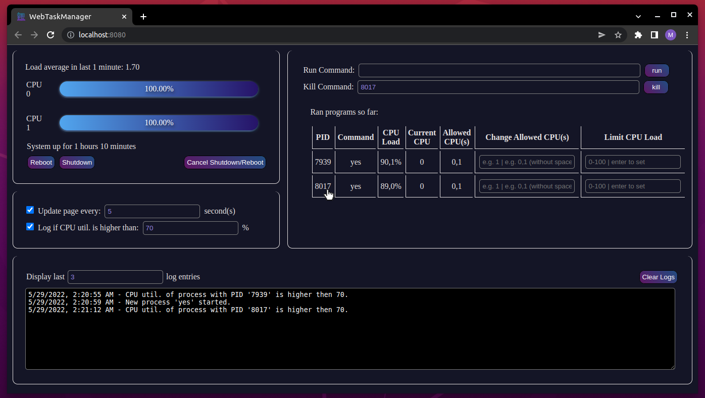
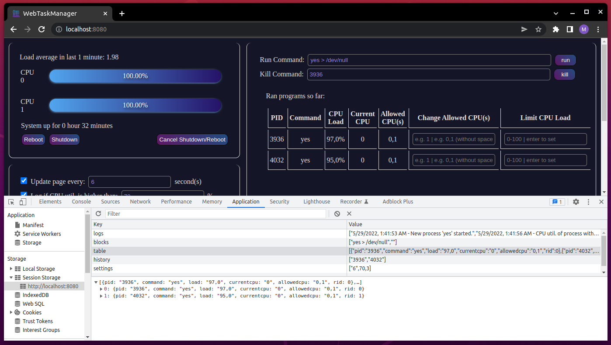

WebTaskManager
WebTaskManager is a simple task manager that runs in a web browser. It is designed with HTML, CSS and JavaScript for the frontend and no ready-made tools or additional libraries are used, all codes are written by hand. On the server side, C, C++ and a C library libhttp are used. No additional download is required. Library external files and their details are as in the table below. Tested in Chrome and Firefox browsers on virtual machines with 2 and 4 CPUs.
Structure of App
| Main | Frontend | |||||
|---|---|---|---|---|---|---|
| server.c | runCommand.c | updateProcess.c | limitCpuLoad.cpp | app.js | index.html | style.css |
| 457 lines | 100 lines | 115 lines | 49 lines | 635 lines | 240 lines | 178 lines |
The files in the data_files folder are used to exchange data between the frontend and the backend.
Getting started
To start the application, it is sufficient to type "make" on the command line. Press enter twice or use the ctrl+c shortcut to close the program.
The program consists of 4 main sections, System info, Command Block, Settings and Logs.
The System info section shows us the load average for the last 1 minute, the loads (%) of all CPUs and the System uptime. This section also contains buttons for restarting, shutting down, and canceling these operations.
And the second part for the whole process management. In this section, there is an input where we enter the commands to start the terminal, and an input where we can terminate these processes according to the name or process id. In addition, there is a table that contains the information of the processes we run and allows us to perform a few operations on it.
The remaining two sections allow us to make minor adjustments to the page and see the logs created by the application.
System Info
Load Average
Load Average data is read from the /proc/loadavg file ( server.c 168-182 ) and saved in the loadavg.json file in json data format with the incoming server request. Then the frontend reads this data and displays it on the screen ( app.js 183-195 ).
CPU Load
I used an algorithm to calculate the processing load of the cores. First, I pulled data from the /proc/stat file. This file contains some CPU related data, We need the data after the first line ( server.c 108-136).
Data is then arranged by string operations and listed in an array to perform calculations. The meanings of these data;
- 1st column : user = normal processes executing in user mode
- 2nd column : nice = niced processes executing in user mode
- 3rd column : system = processes executing in kernel mode
- 4th column : idle = twiddling thumbs
- 5th column : iowait = waiting for I/O to complete
- 6th column : irq = servicing interrupts
- 7th column : softirq = servicing softirqs
For the calculation, the following calculation is used in the double data type ( server.c 149-166):
u = user + system
t = user + system + idle
Then it is waited for 1 second and the changes in these data are measured.
(u1-u0) * 100 / (t1- t0)
The resulting data shows the CPU load.
Control testing of this data was done with gnome-system-monitor and the resulting data is equal.
This operation is done for each CPU and stored in the load.json file as a json array, the first element of this array is the number of processors received with the “nproc” command. The response to the incoming ajax http request is refreshed and read by the frontend and displayed on the screen ( app.js 98-123 ).
Why did I choose to wait 1 second at the beginning of this calculation?
Because the server runs on our device, it uses our system's resources. This means sending a lot of server requests for a lot of data refreshed on the screen along with CPU Load. As a result of this situation, it shows a higher value than it should be because the CPU usage increases instantly. That's why I thought it appropriate to wait a second at the beginning.
System Buttons
Reboot ( server.c 299-308 ), Shutdown ( server.c 308-318 buttons send a request and these requests trigger the commands between the lines specified.
If this field is left blank, the transaction will take place immediately, if the data is entered, the transaction will take place after the entered minute.
Cancel ( server.c 318-321 ) button triggers the "shutdown -c" command.
Command Block Section
Run command
Submitting this form sends a request to the server and sends the input value as a parameter. The server.c file decodes this parameter, passes it to the runCommand file and executes it ( server.c 321-331 ). At the same time, the ID of the running process is sent to the pinfo.txt file before it runs to the runCommand file. ”runCommand” reads this info and executes some functions to get name of command, load of process and allowed CPUs of it. This is the first step in creating the table. This data is compiled and written to the processinfo.json file in JSON format ( runCommand.c 92-100 ). With this first data, the table row is generated and displayed on the screen ( app.js 284-332 ).
Kill Command
The process of terminating a transaction is quite simple. First, when the form is submitted, it is checked whether the value is a number and accordingly a different ajax http request is sent ( app.js 153-206 ). The backend uses the pkill method if it receives a kill request by name, otherwise it uses some c functions ( server.c 331-339 ).
Hint: You can have it automatically forwarded to the kill command form by double-clicking the ID of a process in the table.
Update of the table
Modern browsers provide us with Local Storage and Session Storage features that we can use as a local database, data in Local Storage is kept until the browser history is deleted, and data in Session Storage is kept until the browser is closed. That's why I used Session Storage quite a few times in this project.
In order not to lose the input value when the page is refreshed in the run command, kill command sections, logs and settings section, I saved it in the local database.
If the refresh page setting is active in the settings section, the CPU load, Load average, uptime, logs and table part are updated in the selected period. And required data is fetched from local database. But this phase needs some additional backend progress. First of all, the transaction ID is sent as a parameter with the request. This id is handled in updateProcess and goes through almost the same stages as runCommand. Then, by pulling the resulting data from the updatedinfo.json file, it is updated in the table array in Session Storage. It is displayed on the screen when the page is refreshed.
How do runCommand and updateProcess files get the required data?
The file "/proc/<pid>/comm" is read to get the name of the command. For the CPU usage of the process, the command "top -b -n 2 -d 1 -p %d | tail -1 | awk '{print $9}' > "./data_files/load.txt" is executed and then the value In order to see the CPU actively used by the process, the "ps -o psr -p <pid> > ./data_files/psr.txt" command is executed and data is drawn from the required file, and the same processes also list the CPU that the process has permission to use. This time the command "taskset -pc <pid> > ./data_files/allowedcpus.txt" is used.
How to change CPU load and active CPU?
To limit the CPU usage of a process, it is sufficient to enter a value between 0 and 100 in the required input in the table and press enter. Then a request is sent to the server and the limitCPULoad file is run ( server.c 375-393 ).
This file converts the scheduling policy of the process to sched_deadline and provides the restriction with a few additional steps.
A similar process above is used to change the active CPU. After you send the data, this request is processed in the Backend and first the scheduling policy is updated with sched_other with the command "sudo chrt -o -p 0 <pid>". Then the command "taskset -pc <affinity> <pid>" is executed and the process is completed ( server.c 349-375 ).
Hint: When executing these operations for the first time, do not forget to enter the password to grant root permission from the terminal screen.